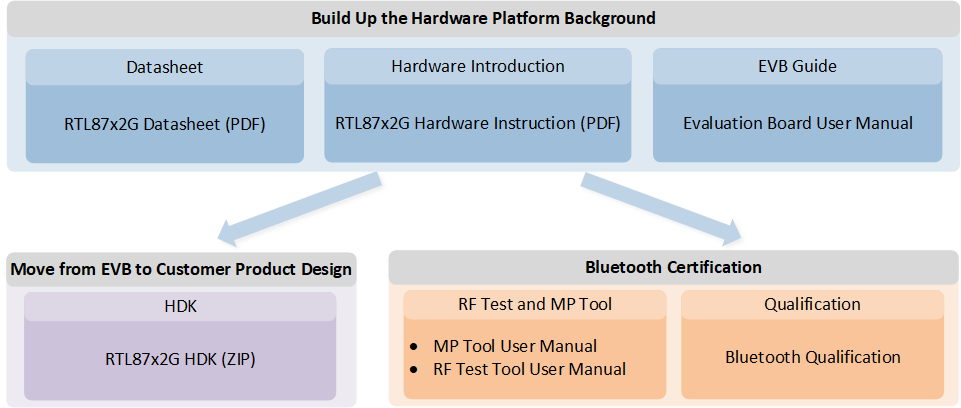
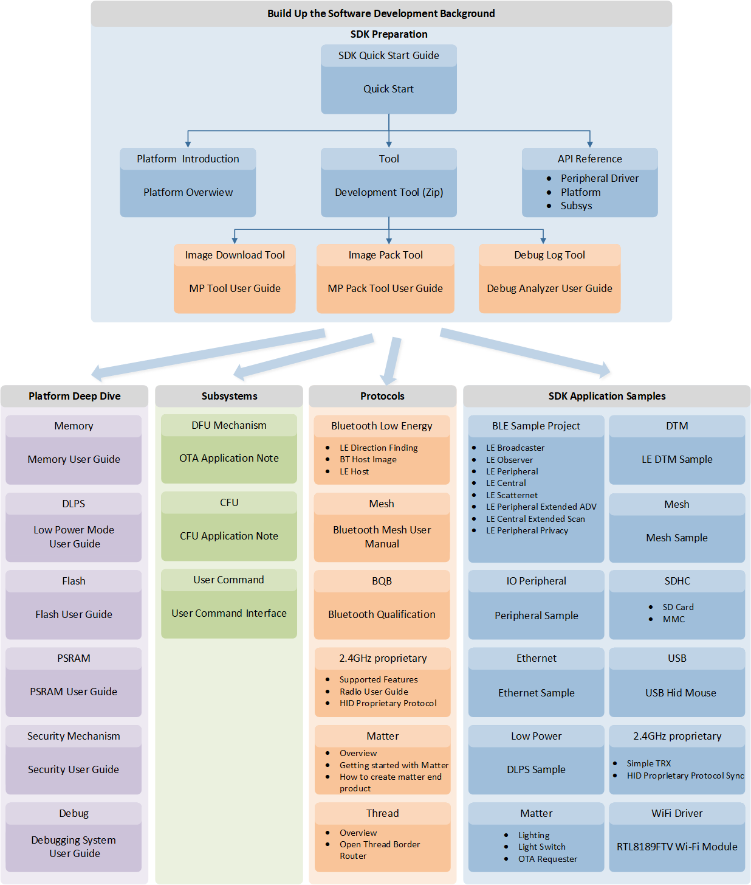
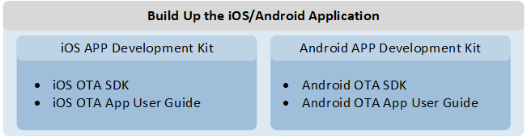

Overview
The RTL87x2G series brings higher-capability products to global partners, with a stronger platform computing power and security level upgraded to PSA-L2. This series not only supports BLE 5.3 version, 2.4GHz proprietary, Zigbee, and Thread Matter, providing the best choice for more Internet applications, but also supports peripherals such as CAN/Ethernet/USB 2.0 HS, which makes the hardware connection capability of this chip achieve an unprecedented level. The upgraded capabilities such as RGB888 provide more options for supporting LCD besides QSPI and I8080, making it faster and more colorful.
In this document, we will introduce how the powerful Realtek RTL87x2G series platform provides the capabilities to enrich our developers' applications. More attractive application cases can be found on the official Realtek website: RealMCU.
The Benefit of the Realtek Solution
Rich and highly compatible peripheral interfaces for IoT and wearable devices.
High-performance computation environment with low power consumption.
Rich development documentation to bridge the gap between Realtek and developers.
Mature mass production experience to assist developers in establishing a production line.
Since Realtek provides rich documentation for our developers, below is a study guide that prioritizes the documents to go through for the SoC Hardware Platform, SDK Software, and Mobile Application topics. This will help better understand our system.
SoC Hardware Platform Study Guide
Prior to designing the developer-specified device, developers can begin by reviewing the Datasheet (RTL87x2G Datasheet), Hardware instruction (RTL87x2G Hardware Instruction), and Evaluation Board Guide to understand the characteristics of the SoC. The Realtek-recognized HDK can then be utilized to finalize the product. Developers can refer to the steps depicted in the following figure.

SoC Hardware Platform Study Guide
Note
The materials with the
PDFandZIPsuffixes in the above image can be obtained from the Realtek official website at RealMCU.Other materials can be found in this online documentation.
Datasheet
RTL87x2G Datasheet provides detailed information on the specifications, features, and usage of the RTL87x2G series SoC.
Hardware Instruction
RTL87x2G Hardware Instruction provides detailed information about the various hardware components that make up the EVB. It includes in-depth details about the mechanisms of the flash, microphone, and antenna. Additionally, the document contains various schematic diagrams to help explain these hardware components and their functionalities.
Evaluation Board Guide
Evaluation Board Guide serves as an introduction to the Evaluation Board Hardware. It provides important information about the board, including an explanation of the interface, details about power supply, an overview of different IO ports, and pin allocation. It also covers information related to the design of the board itself.
SDK Software Study Guide
The Realtek SoC provides rich development resources to help developers familiarize themselves with the RTL87x2G series and quickly start the actual development process.
Developers can begin by exploring the SDK background and the required tools, and then utilize the sample applications to gradually acquaint themselves with the Realtek development environment. Here is the study guide for topics related to software development. Developers can refer to the steps depicted in the following figure.
{kind=link}

SDK Software Development Study Guide
Note
The materials with the
PDFandZIPsuffixes in the above image can be obtained from the Realtek official website at RealMCU.Other materials can be found in this online documentation.
SDK Quick Start Guide
Quick Start serves as a short guide to assist beginners in quickly setting up and utilizing the EVB. It provides a brief overview of important pins on the EVB, instructions on how to generate and download imagzes onto the EVB, and guidance on printing logs. For those completely new to the EVB development board, this should be the first document to start with.
Tool Set
Besides the extension features developed in the SoC system, tool sets developed in the host are also provided for extended feature development, user application development, or mass production.
Tool Set provides a brief introduction to these tools and their release notes, if any. For the user manual for each tool, please navigate to the specific tool directory and refer to the tool user manualon the website: RealMCU
SDK Platform
In this chapter, we will start with an introduction to the SDK resources, assisting developers in effectively utilizing these resources for project development. Additionally, we will provide a detailed overview of essential platform components relevant to the development process, including Memory Management, Flash, PSRAM, Low Power Mode, Security Mechanisms, and Debugging System. Through these comprehensive descriptions, we aim to enable developers to fully understand and accurately use the SDK, thereby enhancing development efficiency and project quality.
Classification |
Description |
|---|---|
Provides an overview of the basics of the Realtek BLE SoC SDK. It covers topics such as the setup process, the architecture of the SDK, instructions for setting up applications and configuring settings, as well as guidelines for downloading and debugging. The primary goal of this document is to help users gain an understanding of how to effectively utilize the SDK for project setup. |
|
Provides a comprehensive description of the memory system of the IC and introduces how to effectively utilize it. The memory system includes ROM, RAM, external SPI Flash, and eFuse. |
|
Describes how to use Flash-related APIs and how Flash works in the IC. Flash is a kind of non-volatile storage for code shadowing to RAM, executing code directly, or storing data. |
|
Describes how to use PSRAM on RTL87x2G. |
|
Aims to provide developers with a comprehensive understanding of the low power mode features and how to use them to maximize battery life. It describes how the low power mode works, how to enter and exit it, and important related APIs. |
|
Introduces the security mechanisms and their usage in the RTL87x2G chip. The security mechanisms include secure boot, image encryption, factory data encryption, eFuse programming, and debug port control. |
|
Debugging is the process of finding and resolving bugs within computer programs, software, or systems. Provides debugging methods in the SDK to debug user applications, such as log mechanism and SWD debugging. |
|
Introduces the clock configuration methods for the RTL87x2G chip. |
SDK Subsystems
Here you will find a collection of the official Realtek libraries and sub-systems.
Classification |
Description |
|---|---|
OTA represents a technology that utilizes Bluetooth to update the image (code and data) that runs in the Flash. Provides a comprehensive overview of how to effectively utilize OTA, including detailed explanations of the flash layout, the image header format, and OTA protocols. |
|
CFU refers to a technology that follows the open-source model provided by the Microsoft Devices team to upgrade images. It is divided into CFU V1 and V2, and incompatible. |
|
This document is used to introduce users to how to use the user command interface. The User command interface is mainly used as a user command receiving module in Bluetooth example projects. |
SDK Protocols
The following user guides describe the supported protocols. They introduce concepts that are important to work with the protocol and guide through developing applications.
Classification |
Description |
|---|---|
Aims to give an overview of LE Stack Interfaces. LE Stack Interfaces can be divided into GAP-based interfaces and GATT-based profile interfaces. |
|
Aims to give an overview of the direction finding methods to help with product development using AoA/AoD. |
|
Aims to give an overview of the Bluetooth Host and GAP Lib. |
|
Designed to assist developers in minimizing their effort to pass the Bluetooth qualification program. |
|
A mesh networking solution based on Bluetooth Low Energy technology. |
|
A full-featured transceiver working at the 2.4GHz frequency band, which can be flexibly applied to developing any proprietary wireless communication protocol. |
|
A 2.4GHz (IEEE 802.15.4) and IPv6-based wireless mesh network protocol, commonly called a Wireless Personal Area Network (WPAN). Thread is specifically built for low-power, low-latency Internet of Things (IoT) devices. It solves the complexities of the IoT, addressing challenges such as interoperability, range, security, energy, and reliability. |
|
Matter (formerly Project CHIP) is a unified, open-source application-layer connectivity standard built to enable developers and device manufacturers to connect and build reliable, and secure ecosystems and increase compatibility among connected home devices. It is built with market-proven technologies using Internet Protocol (IP) and is compatible with Thread and Wi-Fi network transports. |
Sample Projects
The Realtek SDK provides samples that specifically target Realtek devices and show how to implement typical use cases with BLE SoC libraries and drivers.
Applications
The SDK offers a range of comprehensive sample applications demonstrating how to use Realtek devices to achieve typical user scenarios. These applications can serve as a starting point for product development. They utilize the SDK API to implement specific functionalities.
TinyML
The Realtek RTL87x2G TinyML SDK integrates the full functionality of the TFLite model general-purpose inference framework. With the TinyML SDK, customers can more easily replace their own models, manage and configure the memory in use, and flexibly design their own applications, without having to deal with the complex internal workflow of the inference framework. To make it easier to use, the TinyML SDK provides three different application scenario examples along with an on-device auxiliary project for the TinyML development and debugging stage, which can quickly verify how a model runs on the device.
Mobile Application Study Guide
Realtek also offers a guide if the product works with the mobile application.

Mobile Application Study Guide